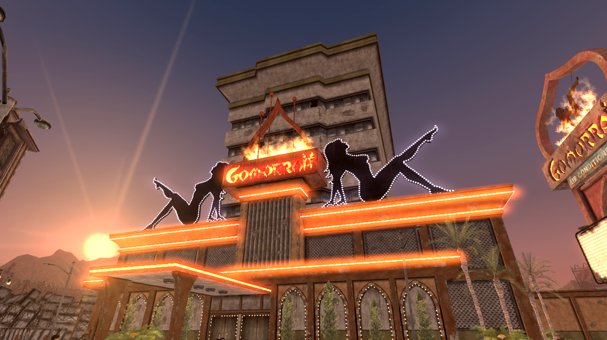

Legion Training
Describing the importance of pop-culture and historical references in video games can be tricky since many games don't even have or need to have a story, such as Pac Man or Asteroids. In the modern video game world, though, people strive for accuracy, thus the drive for virtual reality. However, why does pop-culture matter? In general, "pop culture can affect our ideas about nearly everything. It can perpetuate racism, rape culture, xenophobia and many other ideas that exist in our society today. It can also be said that pop culture reflects society and vice versa." Pop-culture can affect us in a profound way, such as changing our views on these topics; it's a crucial aspect to examine in video games, even when the pop-culture references are generally light-hearted. In Fallout: New Vegas, the reference to pop-culture doesn't shine a light on these topics but instead points out that those things existed, and that they did have a profound effect on society. Other than pop-culture, what makes history important in video games?
I won't make the point that history is essential in general, as that is a discussion for something entirely different; however, history is vital for entertainment. "Arguably the most basic reason why history matters in today's society is for its entertainment value; history provides the distance from a fast-paced world that is so often craved by the hardworking classes – be them working class or middle class. The realness of escaping into a world that once existed can, has and will continue to provide pleasure for many generations." By claiming that one of the reasons for history is entertainment value, it's clear to point out that historical accuracy in video games provides other means for those people to escape into a world that once existed, or at least learn about something that once existed. Fallout: New Vegas does a proper job fitting this description by enlightening players about historical happenings through a thin veil of post-apocalyptic modernism.
Legion Training
New Vegas or Monty Python?
Planet of the Apes | Liberty